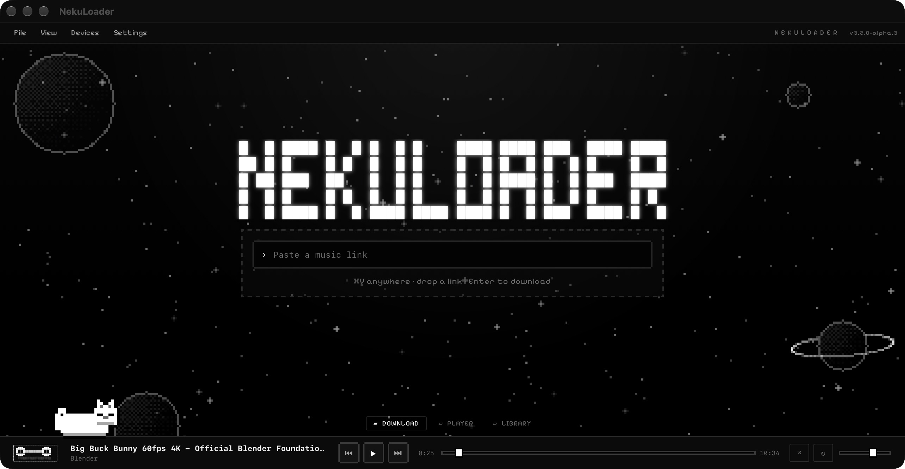

Save
Paste a supported link, choose your format and quality, and queue your downloads. Tags and artwork stay with your files.
Save audio. Build your library. Press play.
A free desktop alpha with local playback, artwork and a pixel universe.
Download ↓
Paste a supported link, choose your format and quality, and queue your downloads. Tags and artwork stay with your files.
Browse your local library, search tracks and albums, and keep listening from the player bar on every page.
Pixel themes, drifting planets and a cat you can pet or move. Your music and interface, on your desktop.
The updated interface is available on every platform: a bottom player, pettable Neku and drifting planets.
Checking…
Download .exeChecking…
Download .dmgChecking…
Download .debAlpha release. Release notes · Checksums
YouTube · YouTube Music · SoundCloud
Spotify, Deezer and Apple Music use audio matching.
Matched audio may differ from the catalog version. Converting to FLAC cannot restore missing source detail.
For media you own or are authorized to download.